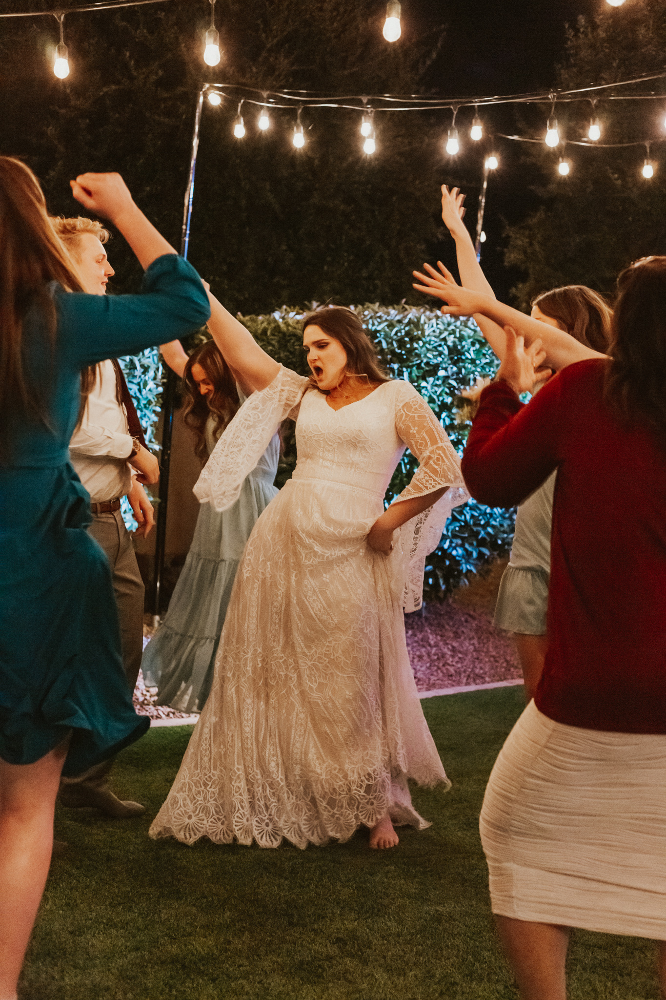

Day One Last night, I just had this overwhelming feeling that I wasn't living up to my potential. Physically, I am overweight, my hair is falling out. My cardio health is not up to par. Spiritually, I don't regularly or formally say my prayers, I do little to no scripture study. My media does not reflect a disciple of Jesus Christ. Emotionally, I do have resilience or the ability to value myself as I am and I still struggle with sucidal ideation and self-harm ideation.
I don't want to be this way anymore. I deserve better. My husband deserves better. Heavenly Father deserves better. I collected some thoughts from David and from a few of my sisters who know me well and asked them to discribe me. Here is what they said.
Beautiful but pale. Passionate, helpful, defensive. Confident in beliefs and truths. Average height height for a woman, brunette, fair skin, narrow eyes, and slightly pigeon toed. Able to explain how I care for those around me, and I am organized. Most of the time I am able to joke around, although, sometimes I can be easily offended. It is easy to tell what you like because you put effort into the things that bring you joy/satisfaction(helping sisters with school, Indy, makeup/art, your husband, work, the church). Very well informed on doctrine/teachings. Beautiful and sexy(obviously David). Perfect combination between sassy and kind. Great spirit about me. Too judgemental. I need to exercise more and eat better to be happier and more confident. I doubt myself before I give myself a shot.
Those are all things other people said about me. I am 5'8.5", as of this morning I am 224.8 lbs. I have brown hair that is a bit thin. I don't say my prayers, I don't read my scriptures. I don't exercise and I eat poorly. I can be mean but I also am easily offended. I don't take care of myself. I need to exercise more. I want to receive personal revelation. I want to augment all the good things that people said about me. I want to be beautiful, passionate, helpful, confident in beliefs and truths, caring, organized, funny, well-informed, sexy, and sassy yet kind.
So starting today I am going to make a special effort to do those things. Let me tell you, it is not going very well. But I am not going to fix everything overnight but I do want to make that effort.
Here are some things that went right today. I did a very nice hair care and skin care routine. I also made myself some eggs with spinach. Those are some good things! I didn't say a morning prayer or do morning scipture study.